Edición de Audio y video
2.1. Proyecto ejemplo
EJERCICIO EJEMPLO - EFECTOS SEGUNDA PARTE
- Abre el audacity y genera un proyecto nuevo denominado efectos2.aup.
- Importa dos canciones de audio a tu proyecto (cruz de palo.mp3 y ladron de amor.mp3, en nuestro caso).
- Desplaza la segunda canción a 10 segundos, aproximadamente, del final de la primera. Observa la imagen.
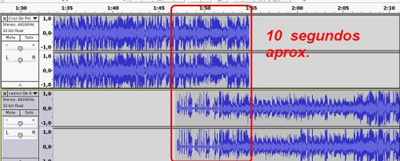
- Aplica el efecto fade-out, en la intersección de ambas, a la primera canción y el efecto fade-in en la segunda canción.
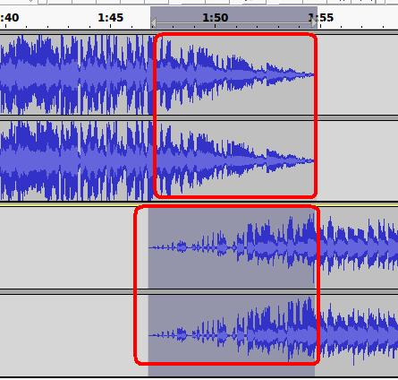
-
La amplitud de onda de la segunda canción es menor que la primera, por ello, utilizando el efecto amplificar. Seleccionamos, exclusivamente, la segunda pista o canción (usa el botón sólo) y, utilizando el efecto amplificar, modifica los valores para que, sin distorsiones, se escuche al mismo nivel que la primera pista.
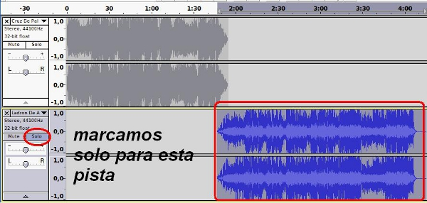
-
- Observa la imagen como ejemplo de los valores que puedes utilizar:
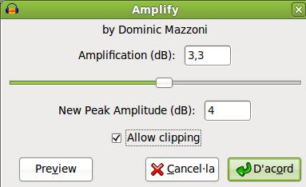
- Ubícate al comienzo de la pista superior y procede a grabar el siguiente mensaje con tu voz:
- "Este es el ejemplo número dos de Audacity y procedemos a realizar una mezcla para la producción de un fichero de audio".
-
Para grabar nuestra voz, utilizando las herramientas de control, hacemos clic en el grabar (1) y se crea una nueva pista en el lugar donde hayamos situado el scruber (puntero) en la línea de tiempo. Al finalizar nuestra locución ejecutamos el botón (2) detener.
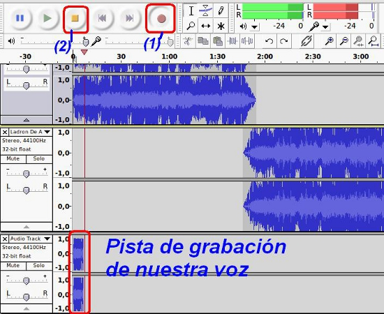
-
Seleccionamos, exclusivamente, la pista de nuestra voz. Procederemos a limpiar el ruido que puede haberse generado al momento de la grabación. Usando el efecto Noise Removal (remover o eliminar ruido), obtenemos primero el perfil del ruido (get noise profile) y, posteriormente, modificamos los valores en el paso 2 para la eliminación del considerado ruido. Cada caso será diferente. En la imagen mostramos unos valores.
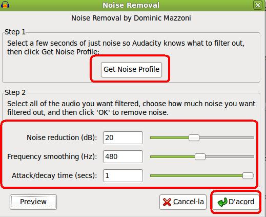
Una vez realizado los cambios, el sonido se muestra menos intenso, puedes aplicar una amplificación de sonido (15 dB, por ejemplo) a esa pista exclusivamente.
| PISTA ORIGINAL | APLICADO EL EFECTO DE ELIMINAR RUIDO |
|
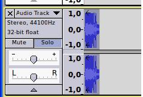
|
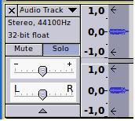
|
-
Graba, en la zona de intersección de las dos canciones, un mensaje, similar a la presentación de una emisora de radio, con el nombre de la canción que se inicia. En mi caso, "y a continuación ¡Ladrón de amor, la canción de moda esta temporada!".
- Aplica un eco a dicho mensaje. Si deseas varios ecos simultáneos has de repetir el efecto eco varias veces.
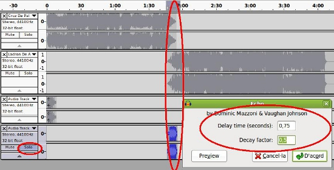
Recuerda: selecciona sólo esa pista y aplica el efecto
-
- Aplica un cambio de velocidad, para distorsionar un poco tu voz, del 10%.
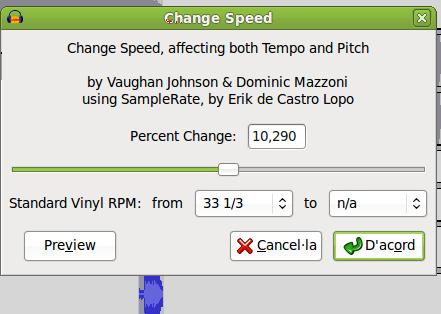
-
Utilizando el ecualizador, realiza los cambios que estimes conveniente para que la primera canción no tenga el sonido tan agudos y amplifica alguno de los graves. Disminuye, igualmente, algo la vocalización.
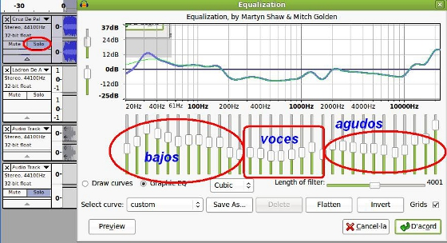
- Selecciona una zona de la primera canción (2 o 3 segundos) donde sólo se reproduzcan instrumentos y sin voz del intérprete. Aplica el efecto repeat (repetir) 5 veces.
Antes Repeat (5 veces) 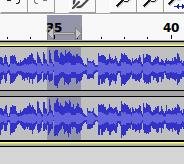 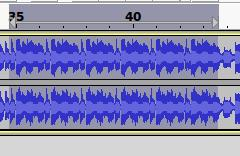
Esto simula un error de reproducción de nuestra canción.
- Graba un tercer mensaje en los segundos finales de la segunda canción. Este mensaje puede contener tu nombre y el grupo o cualquier otro mensaje que identifique tu trabajo.
- Aplica a dicho mensaje el efecto wahwah.
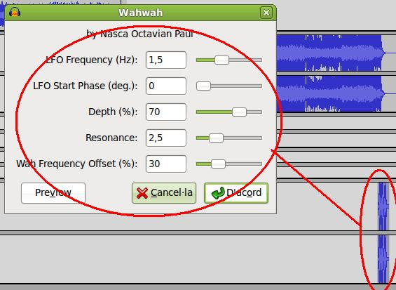
- Guarda el proyecto como efectos1.aup y exporta el resultado de la edición a un fichero tipo mp3.
- Reproduce el mismo para apreciar los efectos.
En la medida que vayas aplicando efectos procede a salvar (guardar) tu proyecto por si te ocurre un error inesperado y se pierde todo el trabajo realizado.
Cuando vayas a grabar una pista de voz nunca tengas seleccionado una parte de la línea de tiempo porque la grabación se detendría al finalizar el tiempo de selección.
Si en la aplicación de los efectos mostrados en este apartado has
tenido algún problema o duda, en la forma en la que se aplican puedes consultar en la zona inferior.
Jo.R.C.A. 2004 - 2011

Edición de Audio y Video con Software Libre by José Ramón Cerdeira Alonso is licensed under a Creative Commons Reconocimiento-No comercial-Compartir bajo la misma licencia 3.0 España License